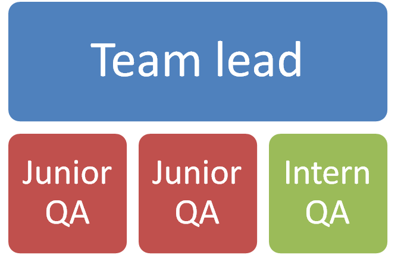
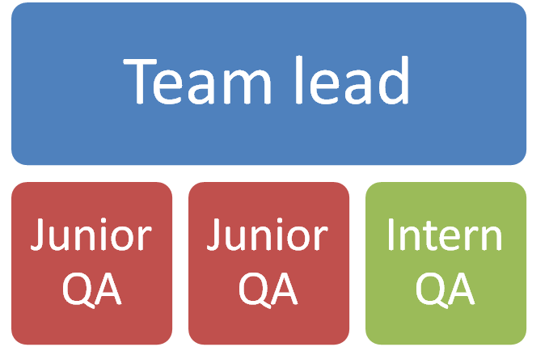

Quality Assurance
Project management (middle management)
iborn.net
Copenhagen 2015
AGENDA
- Organization QA team & Task
- Requirements for a solid test plan
- Automated testing using Slenium
- Test management with TestLink
- Test management with Tarantula
- Regresion testing
- QA strategy
- Plan QA
- Open issues
Organization
- QA team
- Team lead
- Two Junior QA
- One Intern

- Open positions:
- Medium QA
- Team lead
- Two Junior QA
- One Intern

- Medium QA
Organization
- Task
- Testing & testing scenarios
- Support
- Automate process
- Acceptance meetings & acceptance scenarios
- Testing & testing scenarios
- Support
- Automate process
- Acceptance meetings & acceptance scenarios
Requirements for a solid test plan
- Develop Test Strategy
- Analyse the product
- Review available test equipment
- Review test opportunities
- Create test strategy document
- Implement test strategy
- Review and change test strategy and testin
- Define Test Objectives
- Identify Needed Resources
- Define Test Procedures
- Identify Functions to be Tested
- Identify Interfaces to be Tested
Testing & automation
- Quality assurance
- Automated testing
- Tools: Slenium IDE & Selenium WebDriver
- Current/Future

- Manual testing
Test management with TestLink
- test cases
- test suites
- test plans
- test projects
- user management
- reports
- statistic
Regresion testing
- Selenium IDE & Web Driver
- Test Link
- Tarantula
- WebPageTest- page performance tool
QA strategy
- Automate processes
- Expand team
- Train the team
- Regruit users
Plan QA
Phase 1
- Integrating selenium software tool in everyday testing
- Advantages of using selenium
- Disadvantages of using selenium
- Prototype selenium tests for covering small features (without ajax calls)
- Handling of Ajax calls
- Debugging tests
- Test suits
- Using java scripts
- Selenium test that will simulate system overflow
- Advanced tests
- Positive Testing - testing the system by giving the valid data.
- Negative Testing - testing the system by giving the Invalid data.
Phase 2
Phase 3
- Design patterns (creating maintainable and reusable code that can be used with or without selenium tests )
- Data driven tests
- Client side performance testing